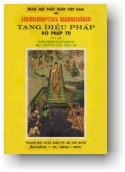

|
BuddhaSasana Home Page |
Vietnamese, with Unicode VU Times font |
|  |
THERAVĀDA DHAMMASAṄGANI Dịch giả: |
|
Xin lưu ý: Cần có phông UnicodeViệt-Phạn VU Times cài vào máy để đọc các chữ Pàli. |
|
II. CHƯƠNG SẮC (RŪPAKAṆḌAṂ) (1) [501] - Thế nào là các pháp vô ký? Quả của các pháp thiện và bất thiện, thuộc dục giới, sắc giới, vô sắc giới, siêu thế, tức thọ uẩn, tưởng uẩn, hành uẩn, thức uẩn, và những pháp nào là tố phi thiện phi bất thiện và phi quả của nghiệp cùng tất cả sắc và vô vi giới. Ðây là pháp vô ký. [502] - Ở đây thế nào là tất cả sắc? Bốn đại hiển và sắc y sinh nương bốn đại hiển. Ðây gọi là tất cả sắc. MẪU ÐỀ NHẤT ÐỀ (Ekakaṃ) [503] Tất cả sắc là phi nhân, vô nhân bất tương ưng nhân, hữu duyên, hữu vi, hiệp thế, có cảnh lậu, cảnh triền, cảnh phược, cảnh bộc, cảnh phối cảnh cái, cảnh khinh thị, cảnh thủ, cảnh phiền não, vô ký, bất tri cảnh, phi sở hữu tâm, bất tương ưng tâm, pháp phi dị thục phi dị thục nhân, phi phiền toái cảnh phiền não, phi hữu tầm hữu tứ, phi vô tầm hữu tứ, phi vô tầm vô tứ, phi câu hành hỷ, phi câu hành lạc, phi câu hành xả, không đáng tri kiến đoạn trừ, không đáng tu tiến đoạn trừ, phi hữu nhân đáng do tri kiến đoạn trừ, phi hữu nhân đáng do tu tiến đoạn trừ, phi nhân đến tích tập, phi nhân đến tịch diệt, phi hữu học, phi vô học, hy thiểu, dục giới, phi sắc giới, phi vô sắc giới, hệ thuộc, phi bất hệ thuộc, phi cố định, phi dẫn xuất, sanh tồn, đáng cho sáu thức biết, vô thường, bị già chinh phục. Như vậy là yếu hiệp sắc một loại. DỨT NHẤT ÐỀ NHỊ ÐỀ (Dukaṃ) [504] - Yếu hiệp sắc hai loại : - Có sắc y sinh, có sắc phi y sinh. - Có sắc thành do thủ, có sắc phi thành do thủ. - Có sắc thành do thủ cảnh thủ, có sắc phi thành do thủ cảnh thủ. - Có sắc hữu kiến, có sắc vô kiến. - Có sắc hữu đối chiếu, có sắc vô đốùi chiếu. - Có sắc quyền, có sắc phi quyền. - Có sắc đại hiển, có sắc phi đại hiển. - Có sắc biểu tri, có sắc phi biểu tri. - Có sắc tâm sở sanh, có sắc phi tâm sở sanh. - Có sắc đồng hiện hữu với tâm, có sắc phi đồng hiện hữu với tâm. - Có sắc tùy chuyển với tâm, có sắc phi tùy chuyển với tâm. - Có sắc nội phần, có sắc ngoại phần. - Có sắc thô, có sắc tế. - Có sắc viễn, có sắc cận. - Có sắc vật của nhãn xúc, có sắc phi vật của nhãn xúc. - Có sắc vật của thọ, sanh từ nhãn thức ... (trùng) ... của tưởng ... (trùng) ... của tư ... (trùng) ... - Có sắc vật của nhãn thức, có sắc phi vật của nhãn thức. - Có sắc vật của nhĩ xúc ... (trùng) ... của tỷ xúc ... (trùng) ... của thiệt xúc ... (trùng) ... - Có sắc vật của thân xúc, có sắc phi vật của thân xúc. - Có sắc của thọ, sanh từ thân xúc ... (trùng) ... của tưởng ... (trùng) ... của tư ... (trùng) ... - Có sắc vật của thân thức, có sắc phi vật của thân thức. - Có sắc cảnh nhãn xúc, có sắc phi cảnh nhãn xúc. - Có sắc cảnh của thọ, sanh từ nhãn xúc ... (trùng) ... của tưởng ... (trùng) ... của tư ... (trùng) ... - Có sắc cảnh nhãn thức, có sắc phi cảnh nhãn thức. - Có sắc nhĩ xúc ... (trùng) ... tỷ xúc ... (trùng) ... thiệt xúc ... (trùng) ... - Có sắc cảnh thân xúc, có sắc phi cảnh thân xúc. - Có sắc cảnh của thọ, sanh từ thân xúc ... (trùng) ... của tưởng ... (trùng) ... của tư ... (trùng) ... - Có sắc cảnh thân thức, có sắc phi cảnh thân thức. - Có sắc cảnh nhãn xứ, có sắc phi nhãn xứ. - Có sắc nhĩ xứ, có sắc phi nhĩ xứ. - Có sắc tỷ xứ ... (trùng) ... thiệt xứ ... (trùng) ... - Có sắc thân xứ, có sắc phi thân xứ. - Có sắc sắc xứ, có sắc phi sắc xứ. - Có sắc thinh xứ ... (trùng) ... khí, xứ ... (trùng) ... vị xứ ... (trùng) ... - Có sắc xúc xứ, có sắc phi xúc xứ. - Có sắc nhãn giới, có sắc phi nhãn giới. - Có sắc nhĩ giới ... (trùng) ... tỷ giới ... (trùng) ... thiệt giới ... (trùng) ... - Có sắc thân giới, có sắc phi thân giới. - Có sắc sắc giới, có sắc phi sắc giới. - Có sắc thinh giới ... (trùng) ... khí giới ... (trùng) ... vị giới ... (trùng) ... - Có sắc xúc giới, cí sắc phi xúc giới. - Cósắc nhãn quyền, có sắc phi nhãn quyền. - Có sắc nhĩ quyền ... (trùng) ... tỷ quyền ... (trùng) ... thiệt quyền ... (trùng) ... - Có sắc thân quyền, có sắc phi thân quyền. - Có sắc nữ quyền, có sắc phi nữ quyền. - Có sắc nam quyền, có sắc phi nam quyền. - Có sắc mạng quyền, có sắc phi mạng quyền. - Có sắc thân biểu tri, có sắc phi thân biểu tri. - Có sắc hư không giới, có sắc phi hư không giới. - Có sắc thủy giới, có sắc phi thủy giới. - Có sắc sắc khinh, có sắc phi sắc khinh. - Có sắc sắc nhu, có sắc phi sắc nhu. - Có sắc thích nghiệp, có sắc phi sắc thích nghiệp. - Có sắc sắc tích tụ, có sắc phi sắc tích tụ.(1) - Có sắc sắc thừa kế, có sắc phi sắc thừa kế.(2) - Có sắc sắc lão mại, có sắc phi sắc lão mại. Aratà (lão dị). - Có sắc sắc vô thường, có sắc phi sắc vô thường. Aniccatà (vô thường, diệt). - Có sắc đoàn thực, có sắc phi đoàn thực. - Như vậy là dứt phần yếu hiệp sắc hai loại. DỨT NHỊ ÐỀ TAM ÐỀ (Tikaṃ) [505] Yếu hiệp sắc ba loại: - Sắc nào thuộc nội phần ấy là y sinh; sắc nào thuộc ngoại phần sắc ấy có y sinh, có phi y sinh. - Sắc nào thuộc nội phần ấy là thành do thủ; sắc nào thuộc ngoại phần sắc ấy có thành do thủ, có phi thành do thủ. - Sắc nào thuộc nội phần sắc ấy là thành do thủ cảnh thủ, sắc nào thuộc ngoại phần sắc ấy có thành do thủ cảnh thủ, có phi thành do thủ cảnh thủ. - Sắc nào thuộc nội phần sắc ấy là sắc vô kiến, sắc nào thuộc ngoại phần sắc ấy có vô kiến, có hữu kiến. - Sắc nào thuộc nội phần sắc ấy là hữu đối chiếu, sắc nào thuộc ngoại phần sắc ấy có hữu đối chiếu, có vô đối chiếu. - Sắc nào thuộc nội phần sắc ấy là quyền, sắc nào thuộc ngoại phần sắc ấy có quyền, có phi quyền - Sắc nào thuộc nội phần sắc ấy là phi đại hiển, sắc nào thuộc ngoại phần sắc ấy có đại hiển, có phi đại hiển. - Sắc nào thuộc nội phần sắc ấy là phi biểu tri, sắc nào thuộc ngoại phần sắc ấy có biểu tri, có phi biểu tri. - Sắc nào thuộc nội phần sắc ấy là phi tâm sở sanh, sắc nào thuộc ngoại phần sắc ấy có tâm sở sanh, có phi tâm sở sanh. - Sắc nào thuộc nội phần sắc ấy là phi đồng hiện hữu với tâm, sắc nào thuộc ngoại phần sắc ấy có đồng hiện hữu với tâm, có phi đồng hiện hữu với tâm. - Sắc nào thuộc nội phần sắc ấy là phi tùy chuyển với tâm, sắc nào thuộc ngoại phần sắc ấy có tùy chuyển với tâm, có phi tùy chuyển với tâm. - Sắc nào thuộc nội phần sắc ấy là thô, sắc nào thuộc ngoại phần sắc ấy có thô, có tế. - Sắc nào thuộc nội phần sắc ấy là cận, sắc nào thuộc ngoại phần sắc ấy có viễn, có cận. - Sắc nào thuộc ngoại phần sắc ấy là phi vật nhãn xúc, sắc nào thuộc nội phần sắc ấy có vật nhãn xúc, có phi vật nhãn xúc. - Sắc nào thuộc ngoại phần sắc ấy là phi vật có thọ sanh từ nhãn xúc ... (trùng) ... của tưởng ... (trùng) ... của tư ... (trùng) ... của nhãn thức, sắc nào thuộc nội phần sắc ấy có vật nhãn thức, có phi vật nhãn thức. - Sắc nào thuộc ngoại phần sắc ấy là phi vật nhĩ xúc ... (trùng) ... tỷ xúc ... (trùng) ... thiệt xúc ... (trùng) ... thân xúc ... (trùng) ... sắc nào thuộc ngoại phần sắc ấy có vật thân xúc, có phi vật thân xúc. - Sắc nào thuộc ngoại phần sắc ấy là phi vật của thọ sanh từ thân xúc ... (trùng) ... của tưởng ... (trùng) ... của tư ... (trùng) ... thân thức, sắc nào thuộc nội phần sắc ấy có vật thức, có phi vật thân thức. - Sắc nào thuộc nội phần sắc ấy là phi cảnh nhãn xúc, sắc nào thuộc ngoại phần sắc ấy có cảnh nhãn xúc, có phi cảnh nhãn xúc. - Sắc nào thuộc nội phần sắc ấy là phi cảnh của thọ sanh từ nhãn xúc ... (trùng) ... của tưởng ... (trùng) ... thân thức, sắc nào thuộc ngoại phần sắc ấy có cảnh nhãn thức, có phi cảnh nhãn thức. - Sắc nào thuộc nội phần sắc ấy là phi cảnh nhĩ xúc ... (trùng) ... tỷ xúc ... (trùng) ... thiệt xúc ... (trùng) ... thân xúc, sắc nào thuộc ngoại phần sắc ấy có cảnh thân xúc, có phi cảnh thân xúc. - Sắc nào thuộc nội phần sắc ấy là phi cảnh của thọ sanh từ thân xúc ... (trùng) ... của tưởng ... (trùng) ... của tư ... (trùng) ... thân xúc, sắc nào thuộc ngoại phần sắc ấy có cảnh thân thức, có phi cảnh thân thức . - Sắc nào thuộc ngoại phần sắc ấy là phi nhãn xứ, sắc nào thuộc nội phần sắc ấy có nhãn xứ, có phi nhãn xứ. - Sắc nào thuộc ngoại phần sắc ấy là phi nhĩ xứ ... (trùng) ... phi tỷ xứ ... (trùng) ... phi thiệt xứ ... (trùng) ... phi thân xứ, sắc nào thuộc nội phần sắc ấy có thân xứ, có phi thân xứ. - Sắc nào thuộc nội phần sắc ấy là phi sắc xứ, sắc nào thuộc ngoại phần sắc ấy có sắc xứ, có phi sắc xứ. - Sắc nào thuộc nội phần sắc ấy là phi thinh xứ ... (trùng) ... phi khí xứ ... (trùng) ... phi vị xứ ... (trùng) ... phi xúc xứ, sắc nào thuộc ngoại phần sắc ấy có xúc xứ, có phi xúc xứ. - Sắc nào thuộc ngoại phần sắc ấy là phi nhãn giới, sắc nào thuộc nội phần sắc ấy có nhãn giới, có phi nhãn giới. - Sắc nào thuộc ngoại phần sắc ấy là phi nhĩ giới ... (trùng) ... phi tỷ giới... (trùng) ... phi thiệt giới ... (trùng) ... phi thân giới, sắc nào thuộc nội phần sắc ấy có thân giới, có phi thân giới. - Sắc nào thuộc nội phần sắc ấy là phi sắc giới, sắc nào thuộc ngoại phần sắc ấy có sắc giới, có phi sắc giới. - Sắc nào thuộc nội phần sắc ấy là phi thinh giới ... (trùng) ... phi khí giới ... (trùng) ... phi vị giới ... (trùng) ... phi xúc giới, sắc nào thuộc ngoại phần sắc ấy có xúc giới, có phi xúc giới. - Sắc nào thuộc ngoại phần sắc ấy là nhãn quyền, sắc nào thuộc nội phần sắc ấy có nhãn quyền, có phi nhãn quyền. - Sắc nào thuộc ngoại phần sắc ấy là phi nhĩ quyền ... (trùng) ... phi tỷ quyền ... (trùng) ... phi thiệt quyền ... (trùng) ... phi thân quyền, sắc nào thuộc nội phần sắc ấy có thân quyền, có phi thân quyền. - Sắc nào thuộc nội phần sắc ấy là phi nữ quyền, sắc nào thuộc ngoại phần sắc ấy có nữ quyền, có phi nữ quyền. - Sắc nào thuộc nội phần sắc ấy là phi nam quyền, sắc nào thuộc ngoại phần sắc ấy có nam quyền, có phi nam quyền. - Sắc nào thuộc nội phần sắc ấy là phi mạng quyền, sắc nào thuộc ngoại phần sắc ấy có mạng quyền, có phi mạng quyền. - Sắc nào thuộc nội phần sắc ấy là phi thân biểu tri, sắc nào thuộc ngoại phần sắc ấy có thân biểu tri, có phi thân biểu tri. - Sắc nào thuộc nội phần sắc ấy là phi khẩu biểu tri, sắc nào thuộc ngoại phần sắc ấy có thân biểu tri, có phi thân biểu tri. - Sắc nào thuộc nội phần sắc ấy là phi hư không giới, sắc nào thuộc ngoại phần sắc ấy có hư không giới, có phi hư không giới. - Sắc nào thuộc nội phần sắc ấy là phi thủy giới, sắc nào thuộc ngoại phần sắc ấy có thủy giới, có phi thủy giới. - Sắc nào thuộc nội phần sắc ấy là sắc phi khinh, sắc nào thuộc ngoại phần sắc ấy có sắc khinh, có sắc phi khinh. - Sắc nào thuộc nội phần sắc ấy là phi sắc nhu, sắc nào thuộc ngoại phần sắc ấy có sắc nhu, có phi sắc nhu. - Sắc nào thuộc nội phần sắc ấy là phi sắc thích nghiệp, sắc nào thuộc ngoại phần sắc ấy có thích nghiệp, có phi sắc thích nghiệp. - Sắc nào thuộc nội phần sắc ấy là phi sắc tích tụ, sắc nào thuộc ngoại phần sắc ấy có sắc tích tụ, có phi sắc tích tụ. - Sắc nào thuộc nội phần sắc ấy là phi sắc thừa kế, sắc nào thuộc ngoại phần sắc ấy có sắc thừa kế, có phi sắc thừa kế. - Sắc nào thuộc nội phần sắc ấy là phi sắc lão mại, sắc nào thuộc ngoại phần sắc ấy có sắc lão mại, có phi sắc lão mại. - Sắc nào thuộc nội phần sắc ấy là phi sắc vô thường, sắc nào thuộc ngoại phần sắc ấy có sắc vô thường, có phi sắc vô thường. - Sắc nào thuộc nội phần sắc ấy là phi đoàn thực, sắc nào thuộc ngoại phần sắc ấy có đoàn thực, có phi đoàn thực. Như vậy là yếu hiệp sắc ba loại. DỨT TAM ÐỀ TỨ ÐỀ (Catukkaṃ) [506] Yếu hiệp sắc bốn loại: - Sắc nào y sinh sắc ấy có thành do thủ, có phi thành do thủ; sắc nào phi y sinh sắc ấy có thành do thủ, có phi thành do thủ. - Sắc nào y sinh sắc ấy có thành do thủ cảnh thủ, có phi thành do thủ cảnh thủ, sắc nào phi y sinh sắc ấy có thành do thủ cảnh thủ, có phi thành do thủ cảnh thủ. - Sắc nào y sinh sắc ấy có hữu đối chiếu, có vô đối chiếu; sắc nào phi y sinh sắc ấy có hữu đối chiếu, có vô đối chiếu. - Sắc nào y sinh sắc đó có thô, có tế; sắc nào phi y sinh sắc ấy có thô, có tế. - Sắc nào y sinh sắc ấy có viễn, có cận; sắc nào phi y sinh sắc ấy có viễn, có cận. - Sắc nào thành do thủ sắc ấy có hữu kiến, có vô kiến; sắc nào phi thành do thủ sắc ấy có hữu kiến, có vô kiến. - Sắc nào thành do thủ sắc ấy có hữu đối chiếu, có vô đối chiếu; sắc nào phi thành do thủ sắc ấy có hữu đối chiếu, có vô đối chiếu. - Sắc nào thành do thủ sắc ấy có đại hiển, có phi đại hiển, sắc nào phi thành do thủ sắc ấy có đại hiển, có phi đại hiển. - Sắc nào thành do thủ sắc ấy có thô, có tế; sắc nào phi thành do thủ sắc ấy có thô, có tế. - Sắc nào thành do thủ sắc ấy có viễn, có cận; sắc nào phi thành do thủ sắc ấy có viễn, có cận. - Sắc nào thành do thủ cảnh thủ sắc ấy có hữu kiến, có vô kiến; sắc nào phi thành do thủ cảnh thủ sắc ấy có hữu kiến, có vô kiến. - Sắc nào thành do thủ cảnh thủ sắc ấy có hữu đối chiếu, có vô đối chiếu; sắc nào phi thành do thủ cảnh thủ sắc ấy có hữu đối chiếu, có vô đối chiếu. - Sắc nào thành do thủ cảnh thủ sắc ấy có đại hiển, có phi đại hiển, sắc nào phi thành do thủ cảnh thủ sắc ấy có đại hiển, có phi đại hiển. - Sắc nào thành do thủ cảnh thủ sắc ấy có thô, có tế; sắc nào phi thành do thủ cảnh thủ sắc ấy có thô, có tế. - Sắc nào thành do thủ cảnh thủ sắc ấy có viễn, có cận; sắc nào phi thành do thủ cảnh thủ sắc ấy có viễn, có cận. - Sắc nào hữu đối chiếu sắc ấy có quyền, có phi quyền; sắc nào vô đối chiếu sắc ấy có quyền, có phi quyền. - Sắc nào hữu đối chiếu sắc ấy có đại hiển, có phi đại hiển, sắc nào vô đối chiếu sắc ấy có đại hiển, có phi đại hiển. - Sắc quyền nào sắc ấy có thô, có tế; sắc phi quyền nào sắc ấy có thô, có tế. - Sắc quyền nào sắc ấy có viễn, có cận; sắc phi quyền nào sắc ấy có viễn, có cận. - Sắc đại hiển nào sắc ấy có thô, có tế; sắc phi đại hiển nào sắc ấy có thô, có tế. - Sắc nào là đại hiển sắc ấy có viễn, có cận; sắc nào là phi đại hiển sắc ấy có viễn, có cận. - Có sắc để thấy, để nghe, để cảm nhận, để biết. Như vậy là yếu hiệp sắc bốn loại. DỨT TỨ ÐỀ NGŨ ÐỀ (Pañcakaṃ) [507] Yếu hiệp sắc năm loại : Ðịa giới, thủy giới, hỏa giới, phong giới và sắc y sinh. Như vậy là yếu hiệp sắc năm loại. DỨT NGŨ ÐỀ LỤC ÐỀ (Chakkaṃ) [508] Yếu hiệp sắc sáu loại: - Sắc nhãn ứng tri, sắc nhĩ ứng tri, sắc tỷ ứng tri, sắc thiệt ứng tri, sắc thân ứng tri, sắc ý ứng tri. Như vậy là yếu hiệp sắc sáu loại. DỨT LỤC ÐỀ THẤT ÐỀ (Sattakaṃ) [509] Yếu hiệp sắc bảy loại : Sắc nhãn ứng tri, sắc nhĩ ứng tri, sắc tỷ ứng tri, sắc thiệt ứng tri, sắc thân ứng tri, sắc ý giới ứng tri, sắc ý thức giới ứng tri. Như vậy là yếu hiệp sắc bảy loại. DỨT THẤT ÐỀ BÁT ÐỀ (Aṭṭhakaṃ) [510] - Yếu hiệp sắc tám loại Sắc nhãn ứng tri, sắc nhĩ ứng tri, sắc tỷ ứng tri, sắc thiệt ứng tri, sắc thân ứng tri có lạc xúc, (sắc thân ứng tri) có khổ xúc, sắc ý giới ứng tri, sắc ý thức giới ưng tri. Như vậy là yếu hiệp sắc tám loại. DỨT BÁT ÐỀ CỬU ÐỀ (Navakaṃ) [511] - Yếu hiệp sắc chín loại Nhãn quyền, nhĩ quyền, tỷ quyền, thiệt quyền, thân quyền, nữ quyền, nam quyền, mạng quyền, và sắc phi quyền. Như vậy là yếu hiệp sắc chín loại. DỨT CỬU ÐỀ THẬP ÐỀ (Dasakaṃ) [512] - Yếu hiệp sắc mười loại : Nhãn quyền, nhĩ quyền, tỷ quyền, thiệt quyền, thân quyền, nữ quyền, nam quyền, mạng quyền, và sắc phi quyền có hữu đối chiếu. Như vậy là yếu hiệp sắc mười loại. DỨT THẬP ÐỀ THẬP NHẤT ÐỀ (Ekādasakaṃ) [513] - Yếu hiệp sắc mười một loại: Nhãn xứ, nhĩ xứ, tỷ xứ, thiệt xứ, thân xứ, sắc xứ, thinh xứ, khí xứ, vị xứ, xúc xứ và sắc vô kiến vô đối chiếu liên quan pháp xứ. Như vậy là yếu hiệp sắc mười một loại. DỨT THẬP NHẤT ÐỀ DỨT MẪU ÐỀ -ooOoo- PHÂN CHIA SẮC (RŪPAVIBHATTI) XIỂN MINH NHẤT ÐỀ (Ekakaniddesa) [514] Tất cả sắc đều là phi nhân, đều là vô nhân, đều là bất tương ưng nhân, đều là hữu duyên, đều là hữu vi, đều là hiệp thế, đều là cảnh lậu, đều là cảnh triền, đều là cảnh phược, đều là cảnh bộc, đều là cảnh phối, đều là cảnh cái, đều là cảnh khinh thị, đều là cảnh thủ, đều là cảnh phiền não, đều là vô ký, đều là bất tri cảnh, đều là phi sở hữu tâm, đều là bất tương ưng tâm, đều là pháp phi dị thục phi dị thục nhân, đều là phi phiền toái cảnh phiền não, đều là phi hữu tầm hữu tứ, đều là phi vô tầm hữu tứ, đều là phi vô tầm vô tứ,đều là phi câu hành tỷ, đều là phi câu hành lạc, đều là phi cau hành xả, đều là không đáng tri kiến đoạn trừ, đều là không đáng tu tiến đoạn trừ,(1) đều là phi hữu nhân đáng cho tri kiến và tu tiến đoạn trừ,(2) đều là phi nhân đến tích tập(3) đều là phi nhân đến tịch diệt(4) đều là phi hữu học, đều là phi vô học, đều là hy thiểu, đều là dục giới, đều là phi sắc giới, đều là phi vô sắc giới(5), đều là hệ thuộc, đều là phi bất hệ thuộc, đều là phi cố định, đều là phi dẫn xuất, đều là sanh tồn, đều là đáng cho sáu thức biết, đều là vô thường, đều là bị già chinh phục(6). Như vậy đây là yếu hiệp sắc một loại. DỨT XIỂN MINH NHẤT ÐỀ XIỂN MINH NHỊ ÐỀ (Dukaniddesa) PHÂN CHIA SẮC Y SINH (Upādāyabhājanīya) (1) . [515] - Sắc y sinh ấy là thế nào? Tức nhãn xứ, nhĩ xứ, tỷ xứ, thiệt xứ, thân xứ, sắc xứ, thinh xứ, khí xứ,vị xứ, nữ quyền, nam quyền, mạng quyền, thân biểu tri, khẩu biểu tri, hư không giới, sắc khinh, sắc nhu, sắc thích nghiệp, sắc tích tụ, sắc thừa kế, sắc lão mại, sắc vô thường, đoàn thực. [516] - Sắc nhãn xứ (2) ấy là thế nào? Nhãn xứ là tinh chất nương bốn đại hiển(3) liên hệ tự thân vô kiến hữu đối chiếu;(4) nhờ mắt vô kiến hữu đối chiếu nào mà người đã thấy, hoặc đang thấy, hoặc sẽ thấy, hoặc có thể thấy sắc hữu kiến hữu đối chiếu, đó là nhãn, đó là nhãn xứ, đó là nhãn giới, đó là nhãn quyền, đó là thế gian, đó là môn, đó là biển cả, đó là bạch tịnh ,sắc, đó là ruộng, đó là vật, đó là con ngươi, đó là con mắt, đó là bờ bên nây, đó là làng bỏ trống. Ðây là sắc nhãn xứ. - Sắc nhãn xứ ấy là thế nào? Nhãn nào là tinh chất nương bốn đại hiển liên hệ tự thân vô kiến hữu đối chiếu; nơi mắt vô kiến hữu đối chiếu nào mà sắc hữu kiến hữu đối chiếu (5) đã được tiếp xúc, hoặc đang được tiếp xúc, hoặc sẽ được tiếp xúc, hoặc có thể được tiếp xúc; đó là nhãn, đó là nhãn xứ, đó là nhãn giới, đó là nhãn quyền, đó là thế gian, đó là môn, đó là biển cả, đó là bạch tịnh, sắc, đó là ruộng, đó là vật, đó là con ngươi, đó là con mắt, đó là bờ bên nây, đó là làng bỏ trống. Ðây là sắc nhãn xứ. - Sắc nhãn xứ ấy là thế nào? Nhãn nào là tinh chất nương bốn đại hiển liên hệ tự thân vô kiến hữu đối chiếu; mắt nào là vô kiến hữu đối chiếu đã được tiếp xúc, hoặc đang được tiếp xúc, hoặc sẽ được tiếp xúc, hoặc có thể được tiếp xúc nơi cảnh sắc hữu kiến hữu đối chiếu, đó là nhãn, đó là nhãn xứ, đó là nhãn giới, đó là nhãn quyền, đó là thế gian, đó là môn, đó là biển cả, đó là bạch tịnh, sắc, đó là ruộng, đó là vật, đó là con ngươi, đó là con mắt, đó là bờ bên nây, đó là làng bỏ trống. Ðây là sắc nhãn xứ. - Sắc nhãn xứ ấy là thế nào? Nhãn nào là tinh chất nương bốn đại hiển, liên hệ tự thân vô kiến hữu đối chiếu; do nương mắt nào mà nhãn xứ bắt cảnh sắc đã sanh, hoặc đang sanh, hoặc sẽ sanh, hoặc có thể sanh ... (trùng) ... do nương mắt nào thọ sanh từ nhãn xúc, bắt cảnh sắc ... (trùng) ... tưởng ... (trùng) ... tư ... (trùng) ... nhãn thức đã sanh, hoặc đang sanh, hoặc sẽ sanh, hoặc có thể sanh ... (trùng) ... do nương mắt nào mà nhãn xúc có cảnh sắc đã sanh, hoặc đang sanh, hoặc sẽ sanh, hoặc có thể sanh ... (trùng) ... do nương mắt nào thọ sanh từ nhãn xúc có cảnh sắc ... (trùng) ... tưởng ... (trùng) ... tư ... (trùng) ... nhãn thức đã sanh, hoặ đang sanh hoặc sẽ sanh, hoặc có thể sanh; đó là nhãn, đó là nhãn xứ, đó là nhãn giới, đó là nhãn quyền, đó là thế gian, đó là môn, đó là biển cả, đó là bạch tịnh, sắc, đó là ruộng, đó là vật, đó là con ngươi, đó là con mắt, đó là bờ bên nây, đó là làng bỏ trống. Ðây là sắc nhãn xứ. [517] - Sắc nhĩ xứ (1) ấy là thế nào? Nhĩ nào là tinh chất nương bốn đại hiển liên hệ tự thân vô kiến hữu đối chiếu nhờ tai vô kiến hữu đối chiếu nào mà người đã nghe, hoặc đang nghe, hoặc sẽ nghe, hoặc có thể nghe tiếng vô hữu kiến hữu đối chiếu; đó là nhĩ, đó là nhĩ xứ, đó là nhĩ giới, đó là nhĩ quyền, đó là thế gian, đó là môn, đó là biển cả, đó là bạch tịnh, đó là ruộng, đó là vật, đó là bờ bên nây, đó là làng bỏ trống. Ðây là sắc nhĩ xứ. - Sắc nhĩ xứ ấy là thế nào? Nhĩ nào là tinh chất nương bốn đại hiển liên hệ tự thân vô kiến hữu đối chiếu nơi tai vô kiến hữu đối chiếu nào mà tiếng vô kiến hữu đối chiếu đã được tiếp xúc, hoặc đang được tiếp xúc, hoặc sẽ được tiếp xúc, hoặc có thể được tiếp xúc; đó là nhĩ, đó là nhĩ xứ, đó là nhĩ giới, đó là nhĩ quyền, đó là thế gian, đó là môn, đó là biển cả, đó là bạch tịnh, sắc, đó là ruộng, đó là vật, đó là bờ bên nây, đó là làng bỏ trống. Ðây là sắc nhĩ xứ. - Sắc nhĩ xứ ấy là thế nào? Nhĩ nào là tinh chất nương bốn đại hiển liên hệ tự thân vô kiến hữu đối chiếu tai nào là vô kiến hữu đối chiếu đã được tiếp xúc, hoặc đang được tiếp xúc, hoặc sẽ được tiếp xúc, hoặc có thể được tiếp xúc, nơi cảnh thinh vô kiến hữu đối chiếu; đó là nhĩ, đó là nhĩ xứ, đó là nhĩ giới, đó là nhĩ quyền, đó là thế gian, đó là môn, đó là biển cả, đó là bạch tịnh, sắc, đó là ruộng, đó là vật, đó là bờ bên nây, đó là làng bỏ trống. Ðây là sắc nhĩ xứ. - Sắc nhĩ xứ ấy là thế nào? Nhĩ nào là tinh chất nương bốn đại hiển liên hệ tự thân vô kiến hữu đối chiếu; do nương tai nào nhĩ xúc bắt cảnh thinh đã sanh, hoặc đang sanh, hoặc sẽ sanh, hoặc có thể sanh ... (trùng) ... do nương tai nào thọ sanh từ nhĩ xúc, có cảnh thinh ... (trùng) ... tưởng ... (trùng) ... tư ... (trùng) ... nhĩ thức đã sanh, hoặc đang sanh, hoặc sẽ sanh, hoặc có thể sanh ... (trùng) ... do nương tai nào mà nhĩ xúc có cảnh thinh đã sanh hoặc đang sanh hoặc sẽ sanh, hoặc có thể sanh ... (trùng) ... do nương tai nào mà thọ sanh từ nhĩ xúc có cảnh thinh ... (trùng) ... tưởng ... (trùng) ... tư ... (trùng) ... nhĩ thức có cảnh thinh đã sanh, hoặc đang sanh, hoặc sẽ sanh, hoặc có thể sanh; đó là nhĩ, đó là nhĩ xứ, đó là nhĩ giới, đó là nhĩ quyền, đó là thế gian, đó là môn, đó là biển cả, đó là bạch tịnh, sắc, đó là ruộng, đó là vật, đó là bờ bên nây, đó là làng bỏ trống. Ðây là sắc nhĩ xứ. [518] - Sắc tỷ xứ (2) ấy là thế nào? Tỷ nào là tinh chất nương bốn đại hiển liên hệ tự thân vô kiến hữu đối chiếu nhờ mũi vô kiến hữu đối chiếu nào mà người đã ngửi, hoặc đang ngửi, hoặc sẽ ngửi, hoặc có thể ngửi mùi vô hữu kiến hữu đối chiếu; đó là tỷ, đó là tỷ xứ, đó là tỷ giới, đó là tỷ quyền, đó là thế gian, đó là môn, đó là biển cả, đó là bạch tịnh, sắc, đó là ruộng, đó là vật, đó là bờ bên nây, đó là làng bỏ trống. Ðây là sắc tỷ xứ. - Sắc tỷ xứ ấy là thế nào? Tỷ nào là tinh chất nương bốn đại hiển liên hệ tự thân vô kiến hữu đối chiếu nơi mũi vô kiến hữu đối chiếu nào mà mùi vô kiến hữu đối chiếu nào đã được tiếp xúc, hoặc đang được tiếp xúc, hoặc sẽ được tiếp xúc, hoặc có thể được tiếp xúc; đó là tỷ, đó là tỷ xứ, đó là tỷ giới, đó là tỷ quyền, đó là thế gian, đó là môn, đó là biển cả, đó là bạch tịnh ,sắc, đó là ruộng, đó là vật, đó là bờ bên nây, đó là làng bỏ trống. Ðây là sắc tỷ xứ. - Sắc tỷ xứ ấy là thế nào? Tỷ nào là tinh chất nương bốn đại hiển liên hệ tự thân vô kiến hữu đối chiếu, mũi nào là vô kiến hữu đối chiếu đã được tiếp xúc, hoặc đang được tiếp xúc, hoặc sẽ được tiếp xúc, hoặc có thể được tiếp xúc, nơi cảnh khí vô kiến hữu đối chiếu; đó là tỷ, đó là tỷ xứ, đó là tỷ giới, đó là tỷ quyền, đó là thế gian, đó là môn, đó là biển cả, đó là bạch tịnh, sắc, đó là vật, đó là bờ bên nây, đó là làng bỏ trống. Ðây là sắc tỷ xứ. - Sắc tỷ xứ ấy là thế nào? Tỷ nào là tinh chất nương bốn đại hiển liên hệ tự thân vô kiến hữu đối chiếu ; do nương mũi nào tỷ xúc bắt cảnh khí đã sanh, hoặc đang sanh, hoặc sẽ sanh, hoặc có thể sanh ... (trùng) ... do nương mũi nào thọ sanh từ nhãn xúc ... (trùng) ... tưởng ... (trùng) ... tư ... (trùng) ... tỷ thức đã sanh, hoặc đang sanh, hoặc sẽ sanh, hoặc có thể sanh ... (trùng) ... do nương mũi nào mà tỷ xúc, có cảnh khí đã sanh, hoặc đang sanh, hoặc sẽ sanh, hoặc có thể sanh ... (trùng) ... do nương mũi nào thọ sanh từ tỷ xúc có cảnh khí ... (trùng) ... tưởng ... (trùng) ... tư ... (trùng) ... tỷ thức đã sanh, hoặc đang sanh, hoặc sẽ sanh, hoặc có thể sanh; đó là tỷ, đó là tỷ xứ, đó là tỷ giới, đó là tỷ quyền, đó là thế gian, đó là môn, đó là biển cả, đó là bạch tịnh, sắc, đó là ruộng, đó là vật, đó là bờ bên nây, đó là làng bỏ trống. Ðây là sắc tỷ xứ. [519] - Sắc thiệt xứ (1)ấy là thế nào? Thiệt nào là tinh chất nương bốn đại hiển liên hệ tự thân vô kiến hữu đối chiếu, nhờ lưỡi vô kiến hữu đối chiếu mà người đã nếm, hoặc đang nếm, hoặc sẽ nếm, hoặc có thể nếm vị vô hữu kiến hữu đối chiếu; đó là thiệt, đó là thiệt xứ, đó là thiệt giới, đó là thiệt quyền, đó là thế gian, đó là môn, đó là biển cả, đó là bạch tịnh, sắc, đó là ruộng, đó là vật, đó là bờ bên nây, đó là làng bỏ trống. Ðây là sắc thiệt xứ. - Sắc thiệt xứ ấy là thế nào? Thiệt nào là tinh chất nương bốn đại hiển liên hệ tự thân vô kiến hữu đối chiếu, nơi lưỡi đã vô kiến hữu đối chiếu nào mà vị vô kiến hữu đối chiếu đã được tiếp xúc, hoặc đang được tiếp xúc, hoặc sẽ được tiếp xúc, hoặc có thể được tiếp xúc; đó là thiệt, đó là thiệt xứ, đó là thiệt giới, đó là thiệt quyền, đó là thế gian, đó là môn, đó là biển cả, đó là bạch tịnh, sắc, đó là ruộng, đó là vật, đó là bờ bên nây, đó là làng bỏ trống. Ðây là sắc thiệt xứ. - Sắc thiệt xứ ấy là thế nào? Thiệt nào là tinh chất nương bốn đại hiển liên hệ tự thân vô kiến hữu đối chiếu, lưỡi nào là vô kiến hữu đối chiếu đã được tiếp xúc, hoặc đang được tiếp xúc, hoặc sẽ được tiếp xúc, hoặc có thể được tiếp xúc, nơi cảnh vị vô kiến hữu đối chiếu; đó là thiệt, đó là thiệt xứ, đó là thiệt giới, đó là thiệt quyền, đó là thế gian, đó là môn, đó là biển cả, đó là bạch tịnh, sắc, đó là ruộng, đó là vật, đó là bờ bên nây, đó là làng bỏ trống. Ðây là sắc thiệt xứ. - Sắc thiệt xứ ấy là thế nào? Thiệt nào là tinh chất nương bốn đại hiển liên hệ tự thân vô kiến hữu đối chiếu; do nương lưỡi nào thiệt xúc bắt cảnh vị đã sanh, hoặc đang sanh, hoặc sẽ sanh, hoặc có thể sanh ... (trùng) ... do nương lưỡi nào mà thọ sanh từ thiệt xúc ... (trùng) ... tưởng ... (trùng) ... tư ... (trùng) ... thiệt thức đã sanh, hoặc đang sanh, hoặc sẽ sanh, hoặc có thể sanh ... (trùng) ... do nương lưỡi nào mà thiệt xúc có cảnh vị đã sanh, hoặc đang sanh hoặc sẽ sanh, hoặc có thể sanh; do nương lưỡi nào mà thọ sanh từ thiệt xúc, có cảnh vị ... (trùng) ... tưởng ... (trùng) ... tư ... (trùng) ... thiệt thức đã sanh, hoặc đang sanh, hoặc sẽ sanh, hoặc có thể sanh; đó là thiệt, đó là thiệt xứ, đó là thiệt giới, đó là thiệt quyền, đó là thế gian, đó là môn, đó là biển cả, đó là bạch tịnh ,sắc, đó là ruộng, đó là bờ bên nây, đó là làng bỏ trống. Ðây là sắc thiệt xứ. [520] - Sắc thân xứ(1) ấy là thế nào? Thân nào là tinh chất nương bốn đại hiển liên hệ tự thân vô kiến hữu đối chiếu, nhờ thân vô kiến hữu đối chiếu mà người đã va chạm, hoặc đang va chạm, hoặc sẽ va chạm, hoặc có thể va chạm cảnh xúc vô kiến hữu đối chiếu; đó là thân, đó là thân xứ, đó là thân giới, đó là thân quyền, đó là thế gian, đó là môn, đó là biển cả, đó là bạch tịnh, sắc, đó là ruộng, đó là vật, đó là bờ bên nây, đó là làng bỏ trống. Ðây là sắc thân xứ. - Sắc thân xứ ấy là thế nào? Thân nào là tinh chất nương bốn đại hiển liên hệ tự thân vô kiến hữu đối chiếu, nơi thân vô kiến hữu đối chiếu nào mà cảnh xúc vô kiến hữu đối chiếu đã được tiếp xúc, hoặc đang được tiếp xúc, hoặc sẽ được tiếp xúc, hoặc có thể được tiếp xúc; đó là thân, đó là thân xứ, đó là thân giới, đó là thân quyền, đó là thế gian, đó là môn, đó là biển cả, đó là bạch tịnh, sắc, đó là ruộng, đó là vật, đó là bờ bên nây, đó là làng bỏ trống. Ðây là sắc thân xứ. - Sắc thân xứ ấy là thế nào? Thân nào là tinh chất nương bốn đại hiển liên hệ tự thân vô kiến hữu đối chiếu, thân nào là vô kiến hữu đối chiếu đã được tiếp xúc, hoặc đang được tiếp xúc, hoặc sẽ được tiếp xúc, hoặc có thể được tiếp xúc, nơi cảnh xúc vô kiến hữu đối chiếu; đó là thân, đó là thân xứ, đó là thân giới, đó là thân quyền, đó là thế gian, đó là môn, đó là biển cả, đó là bạch tịnh, sắc, đó là ruộng, đó là bờ bên nây, đó là làng bỏ trống. Ðây là sắc thân xứ. - Sắc thân xứ ấy là thế nào? Thân nào là tinh chất nương bốn đại hiển liên hệ tự thân vô kiến hữu đối chiếu; do nương thân nào thân xúc bắt cảnh xúc đã sanh, hoặc đang sanh, hoặc sẽ sanh, hoặc có thể sanh ... (trùng) ... do nương thân nào thọ sanh từ thân xúc, bắt cảnh xúc ... (trùng) ... tưởng ... (trùng) ... tư ... (trùng) ... thân thức đã sanh, hoặc đang sanh, hoặc sẽ sanh, hoặc có thể sanh ... (trùng) ... do nương thân nào thọ sanh từ thân xúc có cảnh xúc ... (trùng) ... tưởng ... (trùng) ... tư ... (trùng) ... thân thức đã sanh, hoặc đang sanh, hoặc sẽ sanh, hoặc có thể sanh; đó là thân, đó là thân xứ, đó là thân giới, đó là thân quyền, đó là thế gian, đó là môn, đó là biển cả, đó là bạch tịnh, sắc, đó là ruộng, đó là bờ bên nây, đó là làng bỏ trống. Ðây là sắc nhãn xứ. [521] - Sắc sắc xứ (1) ấy là thế nào Sắc nào là ánh sáng nương bốn đại hiển hữu kiến hữu đối chiếu như màu vàng, màu đỏ tươi, màu trắng, màu đen, màu tím, màu xanh lá mạ, màu xanh trái cây, màu xanh xoài sống, dài, ngắn, thô, méo, tròn, tứ giác, lục giác, bát giác, thập lục giác, lỏm, lồi, bóng, ánh nắng, sáng, tối, mây, sương, khói, bụi, ánh sắc mặt trăng, ánh sắc mặt trời, ánh sắc tinh tú, ánh sắc mặt kính, ánh sắc ngọc ước, ngọc xà cừ, ngọc trai, ngọc bích, ánh sắc vàng và bạc, hoặc là có sắc nào khác là ánh sắc nương bốn đại hiển hữu kiến hữu đối chiếu; sắc hữu kiến hữu đối chiếu nào mà người đã thấy, hoặc đang thấy, hoặc sẽ thấy, hoặc có thể thấy bằng mặt vô kiến hữu đối chiếu; đó là sắc, đó là sắc xứ, đó là sắc giới. Ðây là sắc sắc xứ. - Sắc sắc xứ ấy là thế nào? Sắc nào là ánh sắc nương bốn đại hiển hữu kiến hữu đối chiếu, là màu xanh dương, màu vàng, màu đỏ tươi, màu trắng, màu đen, màu tím, màu xanh lá mạ, màu xanh trái cây, màu trái xoài sống, dài, ngắn, tế, thô, méo, tròn, tứ giác, lục giác, bát giác, thập lục giác, lỏm, lồi, bóng, ánh nắng, sáng, tối, mây, sương, khói, bụi, ánh sắc mặt trăng, ánh sắc mặt trời, ánh sắc tinh tú, ánh sắc mặt kính, ánh sắc ngọc ước, ngọc xà cừ, ngọc trai, ngọc bích, ánh sắc vàng và bạc, hoặc có sắc nào khác là ánh sắc nương bốn đại hiển hữu kiến hữu đối chiếu đã được tiếp xúc, hoặc đang được tiếp xúc, hoặc sẽ được tiếp xúc, hoặc có thể được tiếp xúc; đó là sắc, đó là sắc xứ, đó là sắc giới. Ðây là sắc sắc xứ. - Sắc sắc xứ ấy là thế nào? Sắc nào là ánh sắc nương bốn đại hiển hữu kiến hữu đối chiếu, là màu xanh dương, màu vàng, màu đỏ tươi, màu trắng, màu đen, màu tím, màu xanh lá mạ, màu xanh trái cây, màu trái xoài sống, dài, ngắn, tế, thô, méo, tròn, tứ giác, lục giác, bát giác, thập lục giác, lỏm, lồi, bóng, ánh nắng, sáng, tối, mây, sương, khói, bụi, ánh sắc mặt trăng, ánh sắc mặt trời, ánh sắc tinh tú, ánh sắc mặt kính, ánh sắc ngọc ước, ngọc xà cừ, ngọc trai, ngọc bích, ánh sắc vàng và bạc, hoặc có sắc nào khác là ánh sắc nương bốn đại hiển hữu kiến hữu đối chiếu; là sắc hữu kiến, hữu đối chiếu mà đã được tiếp xúc, hoặc đang được tiếp xúc, hoặc sẽ được tiếp xúc, hoặc có thể được tiếp xúc nơi mắt vô kiến hữu chiếu; đó là sắc, đó là sắc xứ, đó là sắc giới. Ðây là sắc sắc xứ. - Sắc sắc xứ ấy là thế nào? Sắc nào là ánh sắc nương vào bốn đại hiển hữu kiến hữu đối chiếu, là màu xanh dương, màu vàng, màu đỏ tươi, màu trắng, màu đen, màu tím, màu xanh lá mạ, màu xanh trái cây, màu trái xoài sống, dài, ngắn, tế, thô, méo, tròn, tứ giác, lục giác, bát giác, thập lục giác, lỏm, lồi, bóng, ánh nắng, sáng, tối, mây, sương, khói, bụi, ánh sắc mặt trăng, ánh sắc mặt trời, ánh sắc tinh tú, ánh sắc mặt kính, ánh sắc ngọc ước, ngọc xà cừ, ngọc trai, ngọc bích, ánh sắc vàng và bạc, hoặc có sắc nào khác là sắc nương bốn đại hiển hữu kiến hữu đối chiếu, do bắt cảnh sắc nào mà nhãn xúc nương mắt ... (trùng) ... tưởng ... (trùng) ... tư ... (trùng) ... nhãn thức đã sanh, hoặc đang sanh, hoặc sẽ sanh... (trùng) ... có cảnh sắc nàomà nhãn xúc nương maàu7855?t đã sanh, hoặc đang sanh, hoặc sẽ sanh, hoặc có thể sanh, ... (trùng) ... có cảnh sắc nào mà thọ sanh từ nhãn xúc nương mắt ... (trùng) ... tưởng ... (trùng) ... tư ... (trùng) ... nhãn thức đã sanh, hoặc đang sanh, hoặc sẽ sanh, hoặc có thể sanh; đó là sắc, đó là sắc xứ, đó là sắc giới. Ðây là sắc sắc xứ. [522] - Sắc thinh xứ ấy là thế nào? [1] Thinh nào nương bốn đại hiển vô kiến hữu đối chiếu như tiếng trống chầu, tiếng trống cơm, tiếng tù và, tiếng chập chỏa, tiếng hát, tiếng nhạc, tiếng chiêng, tiếng vỗ tay, tiếng kêu la của chúng sanh, tiếng va chạm của các chất, tiếng gió, tiếng nước, tiếng người, tiếng phi nhơn, hoặc là có tiếng nào khác nương bốn đại hiển vô kiến hữu đối chiếu tiếng vô kiến hữu đối chiếu nào mà người đã nghe, hoặc đang nghe, hoặc sẽ nghe, hoặc có thể nghe bằng tai vô kiến hữu đối chiếu; là thinh, đó là thinh xứ, đó là thinh giới. Ðây là sắc thinh xứ. - Sắc thinh xứ ấy là thế nào? Thinh nào nương bốn đại hiển vô kiến hữu đối chiếu như tiếng trống chầu, tiếng trống cơm, tiếng tù và, tiếng chập chỏa, tiếng hát, tiếng nhạc, tiếng chiêng, tiếng vỗ tay, tiếng kêu la của chúng sanh, tiếng va chạm của các chất, tiếng gió, tiếng nước, tiếng người, tiếng phi nhơn, hoặc là có tiếng nào khác nương bốn đại hiển vô kiến hữu đối chiếu đã được tiếp xúc, hoặc sẽ được tiếp xúc, hoặc đang được tiếp xúc, hoặc có thể dược tiếp xúc; đó là thinh, đó là thinh xứ, đó là thinh giới. Ðây là sắc thinh xứ. - Sắc thinh xứ ấy là thế nào? Thinh nào nương bốn đại hiển vô kiến hữu đối chiếu như tiếng trống chầu, tiếng trống cơm, tiếng tù và, tiếng chập chỏa, tiếng hát, tiếng nhạc, tiếng chiêng, tiếng vỗ tay, tiếng kêu la của chúng sanh, tiếng va chạm của các chất, tiếng gió, tiếng nước, tiếng người, tiếng phi nhơn, hoặc là có tiếng nào khác nương bốn đại hiển vô kiến hữu đối chiếu là tiếng vô kiến hữu đối chiếu mà người đã tiếp xúc, hoặc đang được tiếp xúc, hoặc sẽ được tiếp xúc, hoặc có thể được tiếp xúc nơi tai vô kiến hữu đối chiếu; là thinh, đó là thinh xứ, đó là thinh giới. Ðây là sắc thinh xứ. - Sắc thinh xứ ấy là thế nào? Thinh nào nương bốn đại hiển vô kiến hữu đối chiếu như tiếng trống chầu, tiếng trống cơm, tiếng tù và, tiếng chập chỏa, tiếng hát, tiếng nhạc, tiếng chiêng, tiếng vỗ tay, tiếng kêu la của chúng sanh, tiếng va chạm của các chất, tiếng gió, tiếng nước, tiếng người, tiếng phi nhơn, hoặc là có tiếng nào khác nương bốn đại hiển vô kiến hữu đối chiếu do bắt cảnh thinh nào mà nhĩ xúc nương tai đã sanh, hoặc đang sanh, hoặc sẽ sanh, hoặc có thể sanh ... (trùng) ... do bắt cảnh thinh nào mà thọ sanh từ nhĩ xúc nương tai ... tưởng... (trùng) ... tư ... (trùng) ... nhĩ thức đã sanh, hoặc đang sanh, hoặc sẽ sanh, hoặc có thể sanh ... (trùng) ... có cảnh thinh nào mà nhĩ xúc nương tai đã sanh, hoặc đang sanh, hoặc sẽ sanh, hoặc có thể sanh ... (trùng) ... có cảnh thinh nào mà thọ sanh từ nhĩ xúc nương tai ... (trùng) ... tưởng ... (trùng) ... tư ... (trùng) ... nhĩ thức đã sanh, hoặc đang sanh, hoặc sẽ sanh, hoặc có thể sanh; đó là thinh, đó là thinh xứ, đó là thinh giới. Ðây là sắc thinh xứ. [523] - Sắc khí xứ ấy là thế nào? (1) Khí nào nương bốn đại hiển vô kiến hữu đối chiếu như mùi rễ cây, mùi lỏi cây, mùi vỏ cây, mùi lá cây, mùi hoa, mùi trái cây, mùi tanh, hơi độc, mùi thơm, mùi thối, hoặc là có khí nào khác nương bốn đại hiển vô kiến hữu đối chiếu là mùi vô kiến hữu đối chiếu nào mà người đã ngửi, hoặc đang ngửi, hoặc sẽ ngửi, hoặc có thể ngửi bằng tỷ vô kiến hữu đối chiếu; đó là khí, đó là khí xứ, đó là khí giới. Ðây là sắc khí xứ. - Sắc khí xứ ấy là thế nào? Khi nào nương bốn đại hiển vô kiến hữu đối chiếu như mùi rễ cây, mùi lỏi cây, mùi vỏ cây, mùi lá cây, mùi hoa, mùi trái cây, mùi tanh, hơi độc, mùi thơm, mùi thối, hoặc là có khí nào khác nương bốn đại hiển vô kiến hữu đối chiếu nơi mùi vô kiến hữu đối chiếu nào mà mũi vô kiến hữu đối chiếu đã được tiếp xúc, hoặc đang được tiếp xúc, hoặc sẽ được tiếp xúc, hoặc có thể được tiếp xúc; đó là khí, đó là khí xứ, đó là khí giới. Ðây là sắc khí xứ. - Sắc khí xứ ấy là thế nào? Khi nào nương bốn đại hiển vô kiến hữu đối chiếu như mùi rễ cây, mùi lỏi cây, mùi vỏ cây, mùi lá cây, mùi hoa, mùi trái cây, mùi tanh, hơi độc, mùi thơm, mùi thối, hoặc là có khí nào khác nương bốn đại hiển vô kiến hữu đối chiếu là mùi vô kiến hữu đối chiếu mà đã được tiếp xúc, hoặc đang được tiếp xúc, hoặc sẽ được tiếp xúc, hoặc có thể được tiếp xúc nơi mũi vô kiến hữu đối chiếu; đó là khí, đó là khí xứ, đó là khí giới. Ðây là sắc khí xứ. - Sắc khí xứ ấy là thế nào? Khi nào nương bốn đại hiển vô kiến hữu đối chiếu như mùi rễ cây, mùi lỏi cây, mùi vỏ cây, mùi lá cây, mùi hoa, mùi trái cây, mùi tanh, hơi độc, mùi thơm, mùi thối, hoặc là có khí nào khác nương bốn đại hiển vô kiến hữu đối chiếu do bắt cảnh khí nào mà tỷ xúc nương mũi đã sanh hoặc đang sanh, hoặc sẽ sanh, hoặc có thể sanh ... (trùng) ... do bắt cảnh khí nào mà thọ sanh từ tỷ xúc nương mũi ... (trùng) ... tưởng ... (trùng) ... tư ... (trùng) ... tỷ thức đã sanh, hoặc đang sanh, hoặc sẽ sanh, hoặc có thể sanh ... (trùng) ... có cảnh khí nào mà tỷ xúc nương mũi đã sanh, hoặc đang sanh, hoặc có thể sanh có cảnh khí nào mà thọ sanh từ tỷ xúc nương mũi ... (trùng) ... tưởng ... (trùng) ... tư ... (trùng) ... tỷ thức đã sanh, hoặc đang sanh, hoặc sẽ sanh, hoặc có thể sanh; đó là khí, đó là khí xứ, đó là khí giới. Ðây là sắc khí xứ. [524] - Sắc vị xứ ấy là thế nào? (2) Vị nào nương bốn đại hiển vô kiến hữu đối chiếu, như vị rễ cây, vị thân cây, vị vỏ cây, vị lá cây, vị hoa, vị quả, vị chua, vị ngọt, vị đắng, vị cay, vị mặn, vị bùi, vị nhẫn, vị chát, vị ngon, vị dở, hoặc là có vị nào khác nương bốn đại hiển vô kiến hữu đối chiếu là vị vô kiến hữu đối chiếu nào mà người đã nếm, hoặc đang nếm, hoặc sẽ nếm, hoặc có thể nếm bằng lưỡi vô hữu kiến hữu đối chiếu; đó làvị, đó là vị xứ, đó là vị giới. Ðây là sắc vị xứ. - Sắc vị xứ ấy là thế nào? Vị nào nương bốn đại hiển vô kiến hữu đối chiếu, như vị rễ cây, vị thân cây, vị vỏ cây,vị lá cây, vị hoa, vị quả, vị chua, vị ngọt, vị đắng, vị cay, vị mặn, vị bùi, vị nhẩn, vị chát, vị ngon, vị dở, hoặc là có vị nào khác nương bốn đại hiển vô kiến hữu đối chiếu nơi vị vô kiến hữu đối chiếu nào mà lưỡi vô kiến hữu đối chiếu đã được tiếp xúc, hoặc đang được tiếp xúc, hoặc sẽ được tiếp xúc, hoặc có thể được tiếp xúc, đó làvị, đó là vị xứ, đó là vị giới. Ðây là sắc vị xứ. - Sắc vị xứ ấy là thế nào? Vị nào nương bốn đại hiển vô kiến hữu đối chiếu, như vị rễ cây, vị thân cây, vị vỏ cây,vị lá cây, vị hoa, vị quả, vị chua, vị ngọt, vị đắng, vị cay, vị mặn, vị bùi, vị nhẫn, vị chát, vị ngon, vị dở, hoặc là có vị nào khác nương bốn đại hiển vô kiến hữu đối chiếu mà đã được tiếp xúc, hoặc đang được tiếp xúc, hoặc sẽ được tiếp xúc, hoặc có thể được tiếp xúc nơi lưỡi vô kiến hữu đối chiếu; đó làvị, đó là vị xứ, đó là vị giới. Ðây là sắc vị xứ. - Sắc vị xứ ấy là thế nào? Vị nào nương bốn đại hiển vô kiến hữu đối chiếu, như vị rễ cây, vị thân cây, vị vỏ cây,vị lá cây, vị hoa, vị quả, vị chua, vị ngọt, vị đắng, vị cay, vị mặn, vị bùi, vị nhẫn, vị chát, vị ngon, vị dở, hoặc là có vị nào khác nương bốn đại hiển vô kiến hữu đối chiếu do bắt cảnh vị nào mà thiệt xúc nương lưỡi đã sanh, hoặc đang sanh, hoặc sẽ sanh, hoặc có thể sanh ... (trùng) ... do bắt cảnh vị nào thọ sanh từ thiệt xúc nương lưỡi ... (trùng) ... tưởng ... (trùng) ... tư ... (trùng) ... thiệt thức đã sanh, hoặc đang sanh, hoặc sẽ sanh, hoặc có thể sanh ... (trùng) ... có cảnh vị nào mà thiệt xúc đã sanh hoặc đang sanh, hoặc sẽ sanh, hoặc có thể sanh ... (trùng) ... có cảnh vị nào mà thọ sanh từ thiệt xúc nương lưỡi ... (trùng) ... tư ... (trùng) ... thiệt thức đã sanh, hoặc đang sanh, hoặc sẽ sanh, hoặc có thể sanh; đó làvị, đó là vị xứ, đó là vị giới. Ðây là sắc vị xứ. [525] - Sắc nữ quyền ấy là thế nào?(1) Sắc nào của nữ, là căn nữ, tướng nữ, nết nữ, thái độ nữ, tánh hạnh nữ, trạng thái nữ. Ðây là sắc nữ quyền. [526] - Sắc nam quyền ấy là thế nào? (2) Sắc nào của nam, là căn nam, tướng nam, nết nam, thái độ nam, tánh hạnh nam, trạng thái nam. Ðây là sắc nam quyền. [527] - Sắc mạng quyền ấy là thế nào? (3) Sắc nào là sự thọ mạng, sự duy trì, sự nuôi sống, sự nuôi dưỡng, sự tiếp diễn, sự tồn tại, sự gìn giữ, sự sống còn, quyền sống còn của các pháp sắc kia. Ðây là sắc mạng quyền. [528] - Sắc thân biểu tri ấy là thế nào? Sắc nào là sựlay động, sự cử động, sự biểu tri, cách biểu tri, trạng thái biểu tri của thân có tâm thiện, hoặc tâm bất thiện, hoặc tâm vô ký, bước tới, bước lui, ngó qua, ngó lại, co vào, duỗi ra. Ðây là sắc thân biểu tri. [529] - Sắc khấu biểu tri (1)ấy là thế nào? Sắc nào là lời nói, phát biểu, chuyện vãn, thuật sự, phát âm, hành vi phát âm, ngôn ngữ, phát ngôn của người có tâm thiện, hoặc tâm bất thiện, hoặc tâm vô ký; đây gọi là ngôn ngữ, pháp là sự biểu tri, cách biểu tri, trạng thái biểu tri bằng ngôn ngữ ấy. Ðây là sắc khẩu biểu tri. [530] - Sắc hư không giới (2)ấy là thế nào? Sắc nào là khoảng trống, hiện tượng khoảng trống, trống rỗng, hiện tượng trống rỗng, kẻ hở, hiện tượng kẻ hở, không xúc chạm với bốn đại hiển. Ðây là sắc hư không giới. [531] - Sắc sắc khinh (3)ấy là thế nào? Sắc nào là sự nhẹ nhàng của sắc, cách biến đổi nhẹ nhàng, sự không chậm chạp, sự không chần chờ. Ðây là sắc sắc khinh. [532] - Sắc sắc nhu (4)ấy là thế nào? Sắc nào là sự nhu nhuyễn của sắc, sự mền mại, cách không thô cứng cách không cương ngạnh. Ðây là sắc sắc nhu. [533] - Sắc sắc thích nghiệp ấy là thế nào? (5) Sắc nào là sự thích hợp với việc làm của sắc, cách thích hợp với việc làm, trạng thái thích hợp với việc làm. Ðây là sắc sắc thích nghiệp. [534] - Sắc tích tụ ấy là thế nào? (6) Sắc nào là sự tích tập các xứ, sắc ấy là tích tụ sắc. Ðây là sắc tích tụ. [535] - Sắc sắc thừa kế (7)ấy là thế nào? Sắc nào là tích tụ sắc, sắc ấy là thừa kế của sắc. Ðây là sắc thừa kế. [536] - Sắc sắc lão mại (8)ấy là thế nào? Sắc nào là sự cũ kỷ của sắc, già nua, răng long, tóc bạc, da nhăn, giảm thọ, chín muồi các căn. Ðây là sắc sắc lão mại. [537] - Sắc sắc vô thường ấy là thế nào? (1) Sắc nào là sự hoại tận của sắc, sự biến hoại, sự tiêu tán, sự phân tán, trạng thái không thường còn, sự biến mất. Ðây là sắc sắc vô thường. [538] - Sắc đoàn thực ấy là thế nào? Tức cơm, bánh ướt, bánh khô, cá, thịt, sữa tươi, sữa đông, bơ lỏng, bơ tươi, dầu, mật ong, nước mía, hoặc là có sắc nào khác là thức nhai răng, đáng miệng ăn, vật no bụng, đáng nuốt khỏi cổ của từng nhóm chúng sanh trong mỗi mỗi xứ; các chúng sanh nuôi sống bằng bất luận dưỡng tố nào. Ðây là sắc đoàn thực. DỨT PHẦN CHIA SẮC Y SINH. DỨT PHẦN THỨ NHẤT BÁT THIÊN TỰ - CHƯƠNG SẮC. (1) Chương này giải về sắc pháp (rūpadhamma). Sắc pháp cũng thuộc pháp vô ký (abyā - kata) (1) Upacaya (sanh) (2) Santati (trụ) (1) Sắc không phải là pháp đáng cho sơ đạo, hay đạo cao đoạn trừ. (2) Sắc không phải là pháp hữu nhân đáng cho sơ đạo, hay đạo cao đoạn trừ. (3) Sắc không phải là nhân tố làm cho luân hồi. (4) Sắc không phải là nhân tố để đạt đến Níp Bàn. (5) Sắc không phải là pháp đem ra khỏi luân hồi. (6) Ðây là 45 danh nghĩa của sắc pháp. (1) Sắc y sinh (upādāyarūpa) . Upādayati nissiyatī’ ti upādāyaṃ: Nương vào mà sanh ra, gọi là y sinh. Sắc y sinh là sắc phải nương vào tứ đại mới có được. (2) Cakkhāyatana (cakkhu + āyatana). (3)Mahābhūtarūpa - sắc đại hiển là: Ðất, nước, lửa, gió. (4) Anidassanasappaṭigha: vật chất không thấy được nhưng đối chiếu được. (5) Sanidassanasappaṭigha: vật chất thấy được và có đối chiếu được. (1) Sotāyatanaṃ (sota + āyatana). (1) Ghānāyatana (ghāna + āyatana). (2) Jivhāyatana (jīvha + āyatana). (1) Kāyāyatana (kāya + āyatana). (1) Rūpāyatana (rūpā + āyatana). [1] Saddāyatana (sadda + āyatana). (1) Gandhāyatana (gandha + āyatana). (1) Rasāyatana (rasa + āyatana). (2) Itthindriya. (3) Purisindriya. (1) Jīvitindriya. (2) Kāvaviññatti. (3) Akāsadhātu. (4) Akāsadhātu. (5) Mudutā. (6) Tâm vô ký tố này là tâm khai ý môn (manodvārāvajjanacitta). (7) Upacaya. (8) Santati. (9) Jāratā. (1) Aniccatā. -ooOoo- |
Chân thành cám ơn đạo hữu Vasita TTL đã gửi tặng bản vi tính (Bình Anson, 09-2003)
[Mục
lục Vi Diệu Pháp][Thư Mục chính]
updated: 17-09-2003